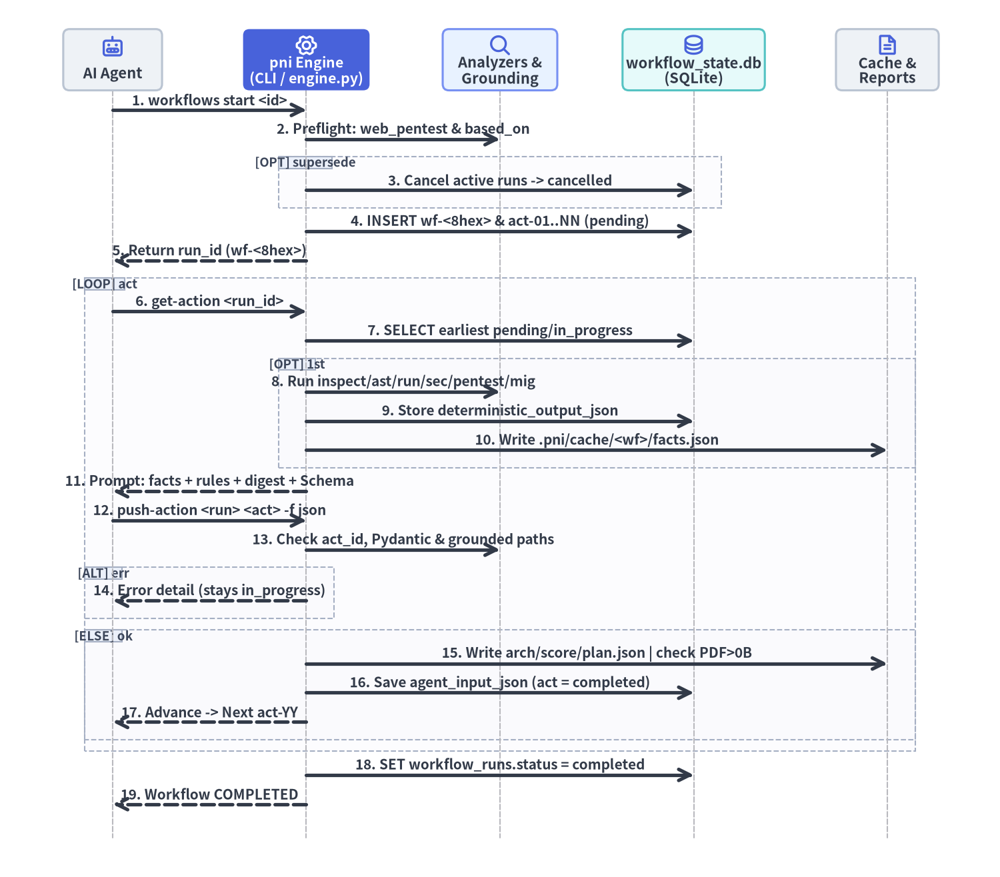
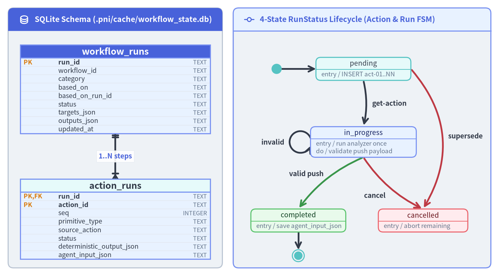
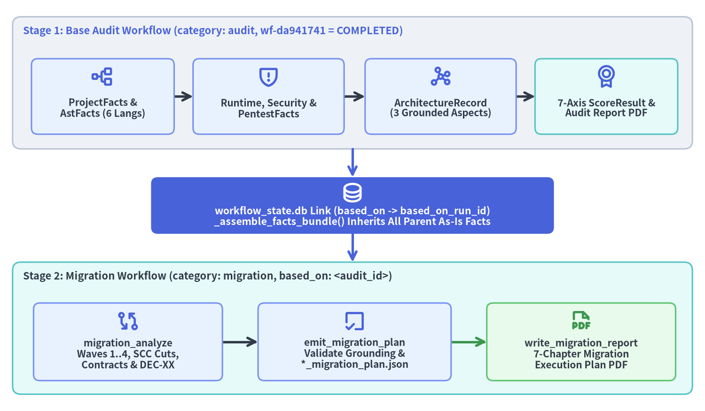

ステートフル Pull-Push エンジン・SQLite 永続化・ワークフロー連鎖
ワークフローが Pre-Flight 準備完了ゲートを通過すると、pni501 (v0.1.3) は src/pni/_workflows/engine.py、state_db.py、aggregator.py、および _migration_engine.py によって統括される 決定論的ステートフル実行ループ へと移行します。AI エージェントの揮発しやすいチャットメモリに複数ステップの進捗管理を委ねたり、検証なしの自己採点を許したりする代わりに、CLI 自身が権威あるステートマシンとして機能します。すなわち、対応6言語（python、java、php、go、typescript、javascript）の静的解析器やコンテナ解析器を各ステップで1回だけ実行し、get-action で文脈を完備したプロンプトを合成し、push-action で Pydantic スキーマと実在ファイルパスのグラウンディングを検証し、完了した As-Is 監査ファクトを後続の To-Be マイグレーションワークフローへ直接引き継ぎます。

Source Code
from drawlib.canvas import save, setup
from drawlib.diagrams.sequence import Participant, PhosphorIcon, SequenceDiagram
from drawlib.styles import Styles
d = SequenceDiagram(
node_style=Styles.PrimaryBold,
node_text_style=Styles.DarkBold.patch(text_size=10.5),
edge_style=Styles.DarkBold,
edge_text_style=Styles.DarkBold.patch(text_size=10.0),
node_card_style=Styles.Neutral.patch(
text_color=Styles.Dark.text_color, shape_r=1.6
),
autonumber=True,
col_width=49.0,
step_y=7.4,
margin=5.0,
)
agent = d.add(
Participant("AI Agent", width=25.0, height=15.5, icon=PhosphorIcon.ROBOT, icon_size=5.8)
)
engine = d.add(
Participant(
"pni Engine\n(CLI / engine.py)",
width=32.0,
height=15.5,
icon=PhosphorIcon.GEAR_SIX,
icon_size=5.8,
style=Styles.WhiteBold,
text_style=Styles.WhiteBold.patch(text_size=10.2),
card_style=Styles.PrimaryFlat.patch(shape_r=1.6),
)
)
analyzers = d.add(
Participant(
"Analyzers &\nGrounding",
width=29.0,
height=15.5,
icon=PhosphorIcon.MAGNIFYING_GLASS,
icon_size=5.8,
card_style=Styles.PrimaryNeutral.patch(shape_r=1.6),
)
)
db = d.add(
Participant(
"workflow_state.db\n(SQLite)",
width=36.0,
height=15.5,
icon=PhosphorIcon.DATABASE,
icon_size=5.8,
card_style=Styles.SecondaryNeutral.patch(shape_r=1.6),
)
)
cache = d.add(
Participant(
"Cache &\nReports",
width=26.0,
height=15.5,
icon=PhosphorIcon.FILE_TEXT,
icon_size=5.8,
)
)
agent.request(engine, "workflows start <id>")
engine.request(analyzers, "Preflight: web_pentest & based_on")
with d.opt("supersede"):
engine.request(db, "Cancel active runs -> cancelled")
engine.request(db, "INSERT wf-<8hex> & act-01..NN (pending)")
engine.reply(agent, "Return run_id (wf-<8hex>)")
with d.loop("act"):
agent.request(engine, "get-action <run_id>")
engine.request(db, "SELECT earliest pending/in_progress")
with d.opt("1st"):
engine.request(analyzers, "Run inspect/ast/run/sec/pentest/mig")
engine.request(db, "Store deterministic_output_json")
engine.request(cache, "Write .pni/cache/<wf>/facts.json")
engine.reply(agent, "Prompt: facts + rules + digest + Schema")
agent.request(engine, "push-action <run> <act> -f json")
engine.request(analyzers, "Check act_id, Pydantic & grounded paths")
with d.alt("err"):
engine.reply(agent, "Error detail (stays in_progress)")
with d.else_("ok"):
engine.request(cache, "Write arch/score/plan.json | check PDF>0B")
engine.request(db, "Save agent_input_json (act = completed)")
engine.reply(agent, "Advance -> Next act-YY")
engine.request(db, "SET workflow_runs.status = completed")
engine.reply(agent, "Workflow COMPLETED")
dw, dh = d.get_size()
setup(width=int(dw) + 8, height=int(dh) + 6, dpi=150)
d.draw(xy=(4.0, 3.0))
save()
1. 時系列 Pull-Push プロトコルとグラウンディング検証
すべてのステートフルワークフロー実行は、src/pni/_workflows/engine.py 内の3つの CLI フェーズに沿って進行します。ワークフロー YAML の設計や Pre-Flight 準備完了ゲートについては ワークフローと Pre-Flight ゲート を参照してください。
フェーズ 1: セッション初期化 (start_workflow_run)
based_onからのターゲット継承および.pni/pni.tomlのデフォルト設定を解決した上で.pni/workflows/<id>.yamlをロードします。- Pre-Flight ゲート（
inspect_base_audit_statusおよびinspect_pentests_prerequisite）を強制し、前提条件が満たされていない場合は SQLite に触れる前にWorkflowPrerequisiteErrorを送出します。 - 15種の複合アクション をフラットな
PrimitiveStep列（act-01..act-NN）へと正規化し、有効なWorkflowOutputs（facts、score、report）を確定します。 --supersedeが指定された場合、db.cancel_active_runs_for_workflow(workflow_id)を呼び出し、同一ワークフローの未完了セッションと残りステップをcancelledに更新します。- 新しい
workflow_runsレコード（run_id = wf-<8hex>、status = in_progress、該当する場合はbased_onとbased_on_run_idを記録）と、N個の連番action_runsレコード（status = pending）を SQLite に挿入します。
フェーズ 2: 決定論的解析の単発実行とプロンプト合成 (get_workflow_action)
AI エージェントが pni workflows get-action <run_id> を実行すると、以下の処理が行われます。
- べき等な単発（Single-Shot）アナライザー実行:
_execute_deterministic_step_if_needed()がaction.deterministic_output_json is Noneを確認します。決定論的プリミティブ（project_inspect、ast_analyze、run_check、security_scan、web_pentest、migration_analyze）の場合、エンジンは解析器を 1回だけ 実行し、シリアライズされた Pydantic JSON をstatus = in_progressとともにaction_runs.deterministic_output_jsonに保存し、統合されたWorkflowFactsBundleを.pni/cache/<workflow_id>/facts.jsonに書き出します。中断後やバリデーション再試行時に再度get-action <run_id>を呼んでも、Docker ビルドや Trivy スキャン、HTTP プローブを再実行することなく SQLite から即座にプロンプトを再描画します。 - 文脈完備の Markdown プロンプト合成 (
_format_action_guide): CLI は以下の情報を組み立てて出力します。- ステップヘッダー（
run_id、action_id、進捗seq/total、primitive_type、source_action、based_on_run_id）。 - タスク固有の指示本文（
render_action_task_body）。record_architectureにおける側面別ガイド、ai_interpretにおけるルール別判定チェックリスト、write_drawlib_reportにおける事前計算済みReportBlueprint/MigrationReportBlueprintレイアウトを含みます。 - 蓄積された決定論的ファクト（
ProjectFacts、AstFacts、RuntimeFacts、SecurityFacts、PentestFacts、MigrationFacts、ArchitectureRecord、および継承されたScoreResult）。 - アクティブなエンジニアリングルールの全文 Markdown（
_render_active_rules）。 - 先行する
ai_interpretの要約、およびemit_scoreの直前では決定論的CompiledAuditDigest（aggregator.pyのcompile_workflow_digest）。重複指摘の排除、モジュール別ホットスポット密度の算出、ルール準拠マトリクスの集計、および 7軸品質スコアリング の重み付き推奨スコア（詳細は 7軸品質スコアリングモデル）を提示します。 - 正確な
push-actionコマンド例と要求される Pydantic JSON スキーマ（get_expected_input_schema_json）。
- ステップヘッダー（
フェーズ 3: スキーマ検証・グラウンディングゲート・成果物出力 (push_workflow_action)
AI エージェントが pni workflows push-action <run_id> <action_id> --file payload.json を送信すると、以下の検証が行われます。
- 厳密な順序ガード:
action_id == current.action_idを検証し、順序外の push は SQLite を一切変更せず即座に拒否します。 - Pydantic 検証とハルシネーション防止グラウンディング (
_verify_grounded_paths): 送信されたすべてのペイロードは正規の Pydantic v2 モデルでパースされた後、AstFacts.module_inventoryおよびワークスペース内の実在ファイルと照合されます（_is_grounded_repo_pathが:symbolや#anchor接尾辞を除去し、project_root/target_root外へのパストラバーサルを防止します）。
| プリミティブ種別 | 検証される Pydantic モデル | 有効な Push 時のグラウンディング検証と成果物出力 |
|---|---|---|
決定論的解析 (project_inspect .. migration_analyze) |
DeterministicAckInput ({"acknowledged": true}) |
解析器の出力が確認されたことを記録し、対となる AI 推論ステップへ進行 |
record_architecture |
SystemProfile / StructureMap / ExecutionFlowMap / ArchitectureRecord |
layers[].paths, modules[].path, entry_points, execution_flows[].involved_files の実在を検証し、.pni/cache/<wf>/architecture.json と facts.json を更新 |
ai_interpret |
InterpretationInput |
findings[].file_path と action_items[].target_files の実在を検証し、アクティブなステップルールに対して rule_checks を正規化 |
emit_score |
ScoreResult |
指摘・改善アイテムのパスを検証し、7軸の ScoreResult に CompiledAuditDigest、score_to_grade()、metrics_snapshot を付与して reports/<target>_score.json を出力 |
emit_migration_plan |
MigrationPlanResult |
target_axes[].affected_files, component_mappings[].source_file, decision_log[].file_path の実在と pr_wbs[].target_files の相対パス安全性を検証し、MigrationFacts を統合して reports/<target>_migration_plan.json を出力 |
write_drawlib_report |
ReportCompletionInput |
generated_files（例: reports/<target>.pdf）内のすべてのパスがワークスペース内に実在し、st_size > 0 バイトであることを検証 |
- 状態破損なしの自己修正ループ: Pydantic パースエラー、架空のファイルパス（ハルシネーション）、または空・未生成の PDF が検出された場合、
push_workflow_action()はステップをin_progressに保ったまま(False, error_detail)を返します。AI エージェントは JSON ペイロードの修正やレポートの再ビルドを行って安全に再試行でき、検証を通過した時点でcomplete_action()がagent_input_jsonを保存してステップをcompletedに進め、最終ステップ完了時にworkflow_runs.statusをcompletedへ遷移させます。
# 決定論的ステートフル Pull-Push ループの実行例
pni workflows start full_audit --supersede
pni workflows get-action wf-1a2b3c4d
pni workflows push-action wf-1a2b3c4d act-01 '{"acknowledged": true}'
2. SQLite 永続化スキーマと4状態 RunStatus ライフサイクル
すべてのステートフルワークフローセッションは .pni/cache/workflow_state.db（src/pni/_workflows/state_db.py の WorkflowStateDB、timeout=30.0 および後方互換のための軽量な自動 ALTER TABLE マイグレーション付き）に保存されます。

Source Code
from drawlib.canvas import save, setup
from drawlib.diagrams.er import Entity, ERDiagram
from drawlib.diagrams.state import FinalState, InitialState, State, StateDiagram
from drawlib.icons import phosphor
from drawlib.smartarts import Panel
from drawlib.styles import Colors, Styles
setup(width=184, height=102, dpi=150)
left_panel = Panel(
"SQLite Schema (.pni/cache/workflow_state.db)",
header_variant="filled",
header_height=8.5,
style=Styles.Neutral.patch(shape_r=2.0),
header_style=Styles.PrimaryFlat,
text_style=Styles.WhiteBold.patch(text_size=11.0),
icon=phosphor.database,
icon_style=Styles.WhiteBold,
)
left_panel.draw(xy=(3.0, 3.0), width=79.0, height=96.0)
erd = ERDiagram(
node_style=Styles.PrimaryNeutral.patch(
text_color=Styles.Dark.text_color, text_size=10.0
),
header_style=Styles.PrimaryNeutral.patch(text_size=10.5),
edge_style=Styles.DarkBold,
edge_text_style=Styles.PrimaryBold.patch(text_size=10.0),
)
wf_ent = erd.add(
Entity(
name="workflow_runs",
width=70.0,
header_height=4.8,
row_height=3.1,
header_style=Styles.PrimaryFlat.patch(text_color=Colors.White, text_size=10.5),
),
xy=(42.5, 69.0),
)
wf_ent.add_column("run_id", type="TEXT", pk=True)
wf_ent.add_column("workflow_id", type="TEXT", nullable=False)
wf_ent.add_column("category", type="TEXT", nullable=False)
wf_ent.add_column("based_on", type="TEXT")
wf_ent.add_column("based_on_run_id", type="TEXT")
wf_ent.add_column("status", type="TEXT", nullable=False)
wf_ent.add_column("targets_json", type="TEXT", nullable=False)
wf_ent.add_column("outputs_json", type="TEXT", nullable=False)
wf_ent.add_column("updated_at", type="TEXT", nullable=False)
act_ent = erd.add(
Entity(
name="action_runs",
width=70.0,
header_height=4.8,
row_height=3.1,
header_style=Styles.SecondaryNeutral.patch(
text_color=Styles.Dark.text_color, text_size=10.5
),
),
xy=(42.5, 21.0),
)
act_ent.add_column("run_id", type="TEXT", pk=True, fk=True)
act_ent.add_column("action_id", type="TEXT", pk=True)
act_ent.add_column("seq", type="INTEGER", nullable=False)
act_ent.add_column("primitive_type", type="TEXT", nullable=False)
act_ent.add_column("source_action", type="TEXT")
act_ent.add_column("status", type="TEXT", nullable=False)
act_ent.add_column("deterministic_output_json", type="TEXT")
act_ent.add_column("agent_input_json", type="TEXT")
wf_ent.connect(
act_ent,
cardinality="1:1..*",
start_side="bottom",
end_side="top",
label="1..N steps",
)
erd.draw(xy=(0.0, 0.0))
right_panel = Panel(
"4-State RunStatus Lifecycle (Action & Run FSM)",
header_variant="filled",
header_height=8.5,
style=Styles.Neutral.patch(shape_r=2.0),
header_style=Styles.PrimaryNeutral,
text_style=Styles.PrimaryBold.patch(text_size=11.0),
icon=phosphor.git_commit,
icon_style=Styles.PrimaryBold,
)
right_panel.draw(xy=(86.0, 3.0), width=95.0, height=96.0)
sd = StateDiagram(
node_style=Styles.SecondaryNeutral.patch(
text_color=Styles.Dark.text_color, shape_r=1.8, text_size=10.0
),
edge_style=Styles.DarkBold,
edge_text_style=Styles.DarkBold.patch(text_size=10.0),
)
s_init = sd.add(InitialState(), xy=(102.0, 76.5))
s_pend = sd.add(
State(
"pending",
shape="box",
entry="INSERT act-01..NN",
width=35.0,
style=Styles.SecondaryNeutral.patch(
text_color=Styles.Dark.text_color, shape_r=1.8, text_size=10.0
),
),
xy=(134.0, 76.5),
)
s_prog = sd.add(
State(
"in_progress",
shape="box",
entry="run analyzer once",
do="validate push payload",
width=39.0,
style=Styles.PrimaryNeutral.patch(shape_r=1.8, text_size=10.0),
),
xy=(134.0, 49.5),
)
s_done = sd.add(
State(
"completed",
shape="box",
entry="save agent_input_json",
width=35.0,
style=Styles.SuccessNeutral.patch(shape_r=1.8, text_size=10.0),
),
xy=(110.0, 20.5),
)
s_canc = sd.add(
State(
"cancelled",
shape="box",
entry="abort remaining",
width=33.0,
style=Styles.DangerNeutral.patch(shape_r=1.8, text_size=10.0),
),
xy=(156.0, 20.5),
)
s_final = sd.add(FinalState(), xy=(110.0, 7.5))
sd.connect(s_init, s_pend, start_side="right", end_side="left")
sd.connect(
s_pend,
s_prog,
event="get-action",
bend=-0.12,
start_side="bottom",
end_side="top",
text_style=Styles.DarkBold.patch(text_size=10.0, halign="left"),
)
sd.connect(s_prog, s_prog, side="left", event="invalid")
sd.connect(
s_prog,
s_done,
event="valid push",
bend=0.14,
start_side="bottom",
end_side="top",
style=Styles.SuccessBold,
text_style=Styles.DarkBold.patch(text_size=10.0, halign="right"),
)
sd.connect(
s_pend,
s_canc,
event="supersede",
bend=-0.36,
start_side="right",
end_side="top",
style=Styles.DangerBold,
text_style=Styles.DarkBold.patch(text_size=10.0, halign="left"),
)
sd.connect(
s_prog,
s_canc,
event="cancel",
bend=0.14,
start_side="bottom",
end_side="top",
style=Styles.DangerBold,
text_style=Styles.DarkBold.patch(text_size=10.0, halign="right", valign="top"),
)
sd.connect(s_done, s_final, start_side="bottom", end_side="top")
sd.draw(xy=(0.0, 0.0))
save()
テーブルの責務・Rewind・キャンセルセマンティクス
workflow_runs:run_id（wf-<8hex>）、workflow_id、category（audit、migration、またはprogress）、based_on（親ワークフロー ID）、based_on_run_id（start時にピン留めされた親監査のwf-<8hex>）、凍結されたtargets_json（WorkflowTargets）、および解決済みのoutputs_json（WorkflowOutputs）など、セッションレベルの来歴を保持します。新規セッションは開始と同時にin_progressとなります。action_runs:1..Nに展開されたプリミティブステップ列（PRIMARY KEY (run_id, action_id)）を保持し、rules_json、params_json、prompt、deterministic_output_json（初回get-action時に記録）、agent_input_json（有効なpush-action時に記録）を管理します。- 4状態ライフサイクル (
RunStatus) と Rewind（巻き戻し）:pending->in_progress->completedが各action_runsレコードの標準的な順方向遷移です。pni workflows rewind <run_or_workflow> <action> [--pull]（別名retry-action）を使うと、act-01からやり直すことなく指定した<action>までセッションを巻き戻し、.pni/workflows/<id>.yamlの最新パラメータを再同期して後続ステップの出力をクリアできます。pendingおよびin_progressのステップ（ならびに親のin_progressワークフロー実行）は、以下の3つの手段でcancelledへ遷移できます。pni workflows cancel <run_id>: 中断されたin_progressセッションを明示的に中止します（completedのセッションは不変であり、キャンセルを試みるとValueErrorとなります）。pni workflows cancel --superseded [-w <workflow_id>]: 同一workflow_idでより新しい非キャンセル実行に追い越された未完了セッションを検索し、一括でcancelledに更新します。pni workflows start <workflow_id> --supersede: 新しいwf-<8hex>セッションを挿入する前に、同一<workflow_id>の既存アクティブ実行を自動的にキャンセルします。
3. 2段階の監査→マイグレーション連鎖 (based_on & based_on_run_id)
大規模なモダナイゼーション計画が失敗する典型的な原因は、AI エージェントが根拠ある As-Is 診断なしにゼロからリファクタリング計画を立案してしまうこと、あるいはマイグレーション計画の試行錯誤のたびにコンテナビルドや Trivy スキャン、ライブ HTTP ペネトレーションプローブを再実行してしまうことです。pni501 は SQLite による2段階ワークフロー連鎖 によってこの両方を解決します。

Source Code
from drawlib.canvas import save, setup
from drawlib.diagrams.architecture import ArchitectureDiagram, Node, NodeGroup, PhosphorIcon
from drawlib.styles import Styles
setup(width=168, height=98, dpi=150)
diag = ArchitectureDiagram(
node_style=Styles.PrimaryBold,
node_text_style=Styles.DarkBold.patch(text_size=10.0),
edge_style=Styles.DarkBold,
edge_text_style=Styles.DarkBold.patch(text_size=10.0),
node_card_style=Styles.PrimaryNeutral.patch(
text_color=Styles.Dark.text_color, shape_r=1.5
),
)
g_stage1 = diag.add(
NodeGroup(
title="Stage 1: Base Audit Workflow (category: audit, wf-da941741 = COMPLETED)",
width=162.0,
height=31.5,
style=Styles.Neutral.patch(shape_r=2.0),
text_style=Styles.PrimaryBold.patch(text_size=10.5, halign="left", valign="top"),
),
xy=(3.0, 62.5),
)
s1_static = g_stage1.add(
Node(
"ProjectFacts &\nAstFacts (6 Langs)",
width=34.0,
height=18.0,
icon=PhosphorIcon.TREE_STRUCTURE,
icon_size=5.4,
),
xy=(21.5, 12.5),
)
s1_dyn = g_stage1.add(
Node(
"Runtime, Security &\nPentestFacts",
width=36.0,
height=18.0,
icon=PhosphorIcon.SHIELD_WARNING,
icon_size=5.4,
),
xy=(61.0, 12.5),
)
s1_arch = g_stage1.add(
Node(
"ArchitectureRecord\n(3 Grounded Aspects)",
width=36.0,
height=18.0,
icon=PhosphorIcon.GRAPH,
icon_size=5.4,
),
xy=(102.0, 12.5),
)
s1_score = g_stage1.add(
Node(
"7-Axis ScoreResult &\nAudit Report PDF",
width=34.0,
height=18.0,
icon=PhosphorIcon.MEDAL,
icon_size=5.4,
card_style=Styles.SecondaryNeutral.patch(shape_r=1.5),
),
xy=(141.5, 12.5),
)
n_bridge = diag.add(
Node(
"workflow_state.db Link (based_on -> based_on_run_id)\n_assemble_facts_bundle() Inherits All Parent As-Is Facts",
width=96.0,
height=13.5,
icon=PhosphorIcon.DATABASE,
icon_size=5.4,
style=Styles.WhiteBold,
text_style=Styles.WhiteBold.patch(text_size=10.2),
card_style=Styles.PrimaryFlat.patch(shape_r=1.6),
),
xy=(84.0, 49.0),
)
g_stage2 = diag.add(
NodeGroup(
title="Stage 2: Migration Workflow (category: migration, based_on: <audit_id>)",
width=162.0,
height=31.5,
style=Styles.SecondaryNeutral.patch(shape_r=2.0),
text_style=Styles.DarkBold.patch(text_size=10.5, halign="left", valign="top"),
),
xy=(3.0, 4.0),
)
s2_mig = g_stage2.add(
Node(
"migration_analyze\nWaves 1..4, SCC Cuts,\nContracts & DEC-XX",
width=45.0,
height=18.5,
icon=PhosphorIcon.GIT_DIFF,
icon_size=5.4,
),
xy=(27.5, 12.5),
)
s2_plan = g_stage2.add(
Node(
"emit_migration_plan\nValidate Grounding &\n*_migration_plan.json",
width=46.0,
height=18.5,
icon=PhosphorIcon.CHECK_SQUARE_OFFSET,
icon_size=5.4,
card_style=Styles.PrimaryNeutral.patch(shape_r=1.5),
),
xy=(81.5, 12.5),
)
s2_pdf = g_stage2.add(
Node(
"write_migration_report\n7-Chapter Migration\nExecution Plan PDF",
width=45.0,
height=18.5,
icon=PhosphorIcon.FILE_PDF,
icon_size=5.4,
style=Styles.SuccessBold,
card_style=Styles.SuccessNeutral.patch(shape_r=1.5),
),
xy=(135.5, 12.5),
)
diag.connect(s1_static, s1_dyn, routing="orthogonal")
diag.connect(s1_dyn, s1_arch, routing="orthogonal")
diag.connect(s1_arch, s1_score, routing="orthogonal")
diag.connect(g_stage1, n_bridge, routing="orthogonal", style=Styles.PrimaryBold)
diag.connect(n_bridge, g_stage2, routing="orthogonal", style=Styles.PrimaryBold)
diag.connect(s2_mig, s2_plan, routing="orthogonal")
diag.connect(s2_plan, s2_pdf, routing="orthogonal", style=Styles.SuccessBold)
diag.draw(xy=(0.0, 0.0))
save()
エンドツーエンドの連鎖メカニクス (engine.py & _migration_engine.py)
- セッション開始時の
based_on_run_idピン留め:pni workflows start <migration_id>が実行されると、inspect_base_audit_status()はworkflow_state.db内で直近にcompletedとなったworkflow_def.based_onの実行（例:wf-da941741）を特定し、その正確な ID をworkflow_runs.based_on_run_idに記録します。based_on_run_idをピン留めすることで完全な再現性が保証されます。後から新しい監査セッションが開始されても、進行中のマイグレーションセッションは開始時に検証された完了済み監査スナップショットに一貫して紐づきます。
- ファクトバンドルの自動再構築 (
_assemble_facts_bundle):- Stage 2 におけるすべての
get-actionおよびpush-action時に、_assemble_facts_bundle(run, actions, db=db)は現在のマイグレーション実行で生成されたファクトを抽出した上で、db.get_actions(run.based_on_run_id)をクエリして以下を自動的に復元します。- 親監査の
deterministic_output_jsonカラムからbundle.project_facts、bundle.ast_facts、bundle.runtime_facts、bundle.security_facts、bundle.pentest_factsを復元。 - 親監査の完了済み
record_architectureステップ（purpose_and_stack、layers_and_modules、flows_and_state）からbundle.architecture_recordを再構築。 - 親監査の
emit_scoreのagent_input_jsonからbundle.base_score_resultをデシリアライズし、Stage 2 のプロンプト内に ベースライン監査スコア要約（overall_score、7軸カテゴリスコア、および主要な継承指摘事項）として直接提示。
- 親監査の
- Stage 2 におけるすべての
- 決定論的マイグレーションインテリジェンス (
migration_analyze):- 継承された
ProjectFacts、AstFacts、RuntimeFactsと、YAML にピン留めされたMigrationOptions（brief、migration_strategy、api_compatibility、bug_handling_policy、codemod_tool）を入力として、execute_migration_analyze_json()が以下のMigrationFactsを算出します。- トポロジカル・リファクタリングウェーブ (
Waves 1..4) と強連結成分（SCC）サイクルカット: 内部モジュールを依存ゼロの葉モジュール（Wave 1）からエントリポイント・オーケストレーター（Wave 4）へと順序付けし、循環依存を最小影響で断ち切るcycle_cutsを算出します。 - 暗黙のエンドポイント契約と環境変数契約: HTTP/CLI のリクエスト・レスポンスキー（
implicit_contracts）および散在する環境変数とデフォルト値（env_contracts）を抽出し、Phase 0 の仕様固定テスト（Characterization Test）の土台とします。 - ステートフル・DB・外部 HTTP 境界タッチポイント: プロセスローカルな可変状態、生 SQL 呼び出し、外部 RPC（
boundary_touchpoints）を特定し、推奨される Clean Architecture の Port/Adapter 分離先を提示します。 - 機械的 Codemod レシピと
DEC-XX仕様/バグ境界候補: OpenRewrite、Rector、Ruff、gofix、jscodeshift の適切な自動変換レシピ（mechanical_codemods）をマッチングするとともに、緩い等価比較による認証判定や MD5 ハッシュ、危険な Cookie デシリアライズ、隠しデバッグキーといった Hyrum の法則に関わるレガシー挙動をDEC-01..NNのspec_vs_bug_candidatesとして抽出します。
- トポロジカル・リファクタリングウェーブ (
- 継承された
- グラウンディング検証済み計画の永続化と7章ビジュアルレポートのビルド:
emit_migration_planステップでは、validate_and_persist_migration_plan()がtarget_axes[].affected_files、target_architecture.component_mappings[].source_file、decision_log[].file_pathで参照されているすべての As-Is パスが継承元のAstFacts.module_inventoryまたはワークスペース内に実在することを検証し、pr_wbs[].target_filesが安全な相対パスであることを確認した上で、MigrationFactsを埋め込んでreports/<target>_migration_plan.jsonを出力します。- 最後に
write_migration_report（report_kind: "migration"設定のwrite_drawlib_report）が.pni/cache/<migration_id>/migration_blueprint.jsonを生成し、7章構成（00_cover.md..06_*.md）の Drawlib マイグレーション実行計画 PDF（reports/<target>.pdf、詳細は Drawlib ビジュアルレポーター）のコンパイルへとエージェントを導き、ファイルが空でないことを確認してworkflow_runs.statusをcompletedに完了させます。